US — United States
The main impact of a 200 basis-point (2.00 percentage-point) cut in United States interest rates on the United States is a 0.47% rise in GDP by the 11th quarter — a large domestic expansion, not a spillover. This is the home country of the shock, so the response is the full domestic multiplier rather than a diluted cross-border echo. The GDP path builds gradually from essentially zero in Q1, reaches its peak of 0.47% above baseline in Q11, and then decays, mostly fading by Q19 and sitting at just 0.03% above baseline by Q20. The shape is a hump: stimulus accumulates as lower rates work through financial conditions, then unwinds as prices and policy adjust.
Demand and trade move together but not uniformly. Household consumption rises to a peak of 0.29% above baseline in Q12, a solid but smaller response than overall GDP, consistent with a rate cut lifting durables and credit-sensitive spending rather than the whole consumption basket. Private investment is the strongest real channel: it peaks at 2.53% above baseline in Q8, front-loaded because the cost of capital falls immediately. Net exports — the trade balance, since this model does not split imports from exports — improve modestly, peaking at 0.02% of GDP in Q11 and still 0.01% above baseline at Q20. Government spending actually falls slightly, to a trough of −0.09% below baseline in Q11, as stronger activity and higher receipts reduce the need for outlays. Government debt rises to a peak of 0.09% above baseline in Q13, then fades to 0.03% by Q20.
On the external side, the real exchange rate rises — that is a real depreciation, a weaker, more competitive home currency. It climbs to a peak of 0.61% above baseline in Q11 and remains 0.27% above baseline at Q20, so the depreciation is persistent rather than transient. The weaker real exchange rate is what supports the modest net export improvement: a more competitive currency tilts the trade balance up, though the effect is small relative to the domestic demand channels. Note the label "Currency Strength" in the raw data is misleading here; the RER is up, which means the dollar is weaker in real terms, not stronger.
Labour market conditions tighten. Employment rises to a peak of 0.48% above baseline in Q13 and is still 0.19% above baseline at Q20. Unemployment falls correspondingly, reaching a trough of −0.24 percentage points below baseline in Q14 and remaining −0.11 points below baseline at Q20. Real wages rise steadily throughout the horizon, reaching 0.46% above baseline by Q20 — the peak is at the end of the window, so wage gains are still building even as output fades. That combination of falling unemployment and rising real wages is the classic tight-labour-market signature of demand stimulus.
Prices respond with a lag and modestly. CPI inflation rises to a peak of 0.04 percentage points above baseline in Q11, and the cumulative CPI effect over Q1–Q12 sums to 0.23 percentage points — a small inflationary impulse, not a surge. Domestic inflation peaks at 0.03 percentage points above baseline in Q11. Firms' marginal cost rises to a peak of 0.28% above baseline in Q11, then decays to 0.02% by Q20. The price block is consistent with a demand-driven expansion that runs into only mild cost pressure, and CPI inflation actually dips marginally below baseline by Q20.
Financial conditions ease sharply at first and then normalize. The local policy rate falls to a trough of −1.03 percentage points below baseline in Q8 — the cut is not fully passed through one-for-one, and the policy rate then rises back above baseline from Q14 onward, reaching +0.10 points by Q20 as the stimulus is withdrawn. Government 2-year yields fall to a trough of −0.64 percentage points below baseline in Q4, then turn positive from Q12. Government 5-year yields fall to −0.25 points in Q1 and drift back toward zero, turning slightly positive around Q12 before ending at −0.05 points in Q20. Government 10-year yields fall to −0.16 points in Q2 and remain below baseline throughout, at −0.04 points by Q20. Bond prices rise to a peak of 6.76% above baseline in Q8, then fall below baseline from Q14, ending at −0.66% by Q20 — the mirror image of the yield path. Equity prices rise to a peak of 1.61% above baseline in Q11 and are still 0.05% above baseline at Q20. Tobin's Q — the value of installed capital — peaks at 1.77% above baseline in Q8 and turns slightly negative by Q20. House prices rise steadily to a peak of 0.42% above baseline in Q16 and remain 0.37% above baseline at Q20. Bank credit supply expands only marginally, peaking at 0.02% above baseline in Q18. Lending spreads are unchanged at zero throughout — the model transmits the rate cut through the risk-free curve rather than through credit spreads.
Sectorally, the expansion is uneven. Services GDP rises to a peak of 0.36% above baseline in Q11, closely tracking the aggregate. Manufacturing GDP actually falls, to a trough of −0.10% below baseline in Q11, and remains −0.08% below baseline at Q20 — the weaker real exchange rate and the rotation of demand toward services leave manufacturing as the laggard. The capital stock builds slowly, peaking at 0.10% above baseline in Q18 and holding near that level at Q20, the cumulative result of the investment surge.
Timing matters for the desk. The GDP effect is largest in Q11, with the investment, Tobin's Q, bond price, and policy rate responses all peaking earlier, around Q4–Q8. By Q20 the GDP effect has largely faded to 0.03%, though employment, real wages, house prices, and the real exchange rate remain above baseline. The peak is mid-horizon, not immediate, and the tail is long.
These are model impulse responses relative to baseline, not forecasts. They describe how the model economy deviates from its own no-shock path after a 200 basis-point US rate cut, holding the oil price and VIX at their baseline values since neither appears in ActiveShocks. Number check vs JSON: GDP peak +0.47%, CPI 3y +0.23pp, equity peak +1.61%.
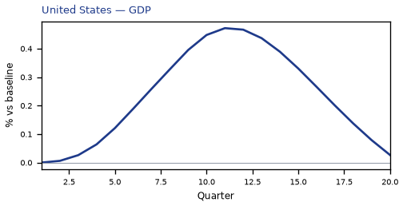
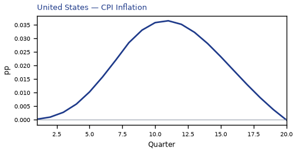
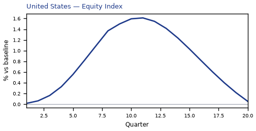
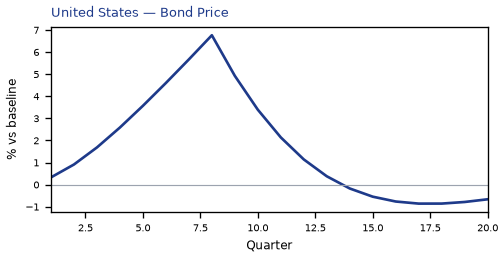
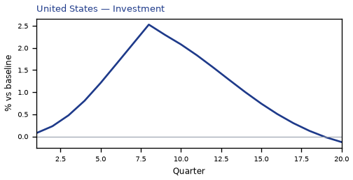
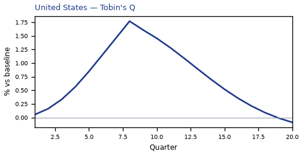

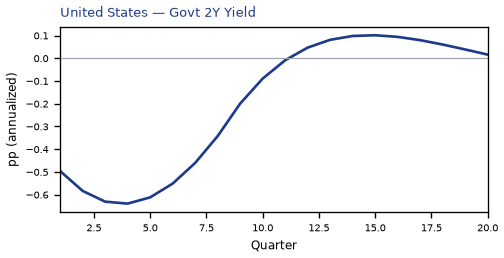
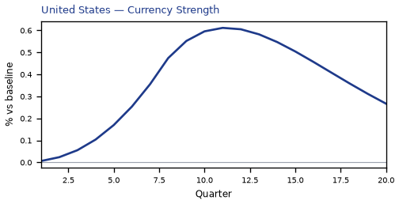
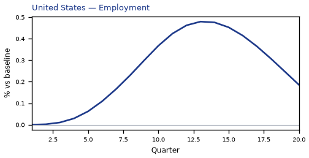
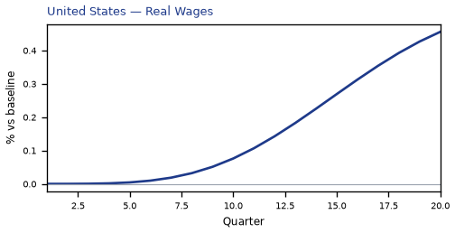
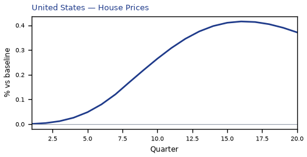
source=live · global_macro_v5 · contract v6 · Q1–Q20 JSON · not financial advice